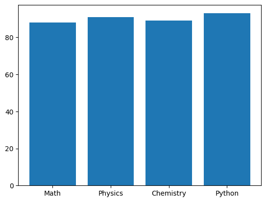
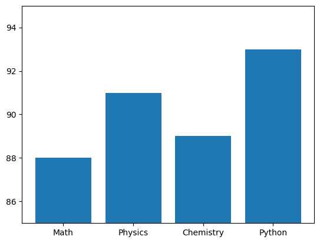

students = {
"S01": ["Anu", 78, 82, 91],
"S02": ["Ravi", 92, 88, 79],
"S03": ["Meena", 65, 72, 68],
"S04": ["Arun", 92, 95, 94],
"S05": ["Kiran", 55, 61, 58]
}
results = {}Assignment
Consider
\[ f(x)= \begin{cases} -x, & x<0,\\ x^2, & x\geq0. \end{cases} \]
- Generate 101 points between (-5) and (5).
- Calculate (f(x)) using a loop and
if-else. - Plot the function.
- Add labels, title and grid.
Assignment
Given:
x = [1, 2, 3, 4, 5]
actual = [4.0, 6.2, 7.8, 10.4, 12.1]
predicted = [3.8, 6.0, 8.2, 10.0, 12.5]- Plot actual observations using scatter.
- Plot predictions using a line.
- Calculate the absolute error at every point.
- Find the largest error.
- Mark the corresponding point on the graph.
- Plot the residuals separately.
Assignment
Compare
\[ e^x \]
with its approximation
\[ 1+x+\frac{x^2}{2}. \]
For
\[ -1\leq x\leq1, \]
- plot the exact function,
- plot the approximation,
- calculate the absolute error,
- plot the error
Assignment
Consider
\[ x_{n+1}=0.6x_n+4, \qquad x_0=0. \]
- Generate 30 terms using a loop.
- Plot (x_n) against (n).
- Find the value toward which the sequence appears to converge.
- Solve
\[ x=0.6x+4 \]
and compare with the graph. 5. Repeat using (x_0=20).
Assignment
Given:
time = [0, 1, 2, 3, 4, 5, 6, 7]
actual = [1.0, 2.4, 4.1, 6.3, 9.2, 12.6, 16.5, 21.1]
prediction = [1.2, 2.5, 4.0, 6.5, 9.0, 12.5, 16.8, 20.7]Create one complete visualization that contains:
- actual values as scatter points,
- predictions as a line,
- appropriate axis labels,
- a title,
- a legend,
- grid lines.
Then calculate
\[ e_i=y_i-\hat y_i \]
Question 8
Write a function that accepts a sentence and returns all the palindrome words appearing in it.
The comparison should be case-insensitive.
Example
Input:
Madam teaches level and radar concepts
Output:
['Madam', 'level', 'radar']Question 9
Given two lists,
A = [1, 2, 2, 3, 4, 5]
B = [2, 2, 2, 3, 5, 5]find the elements common to both lists together with the minimum number of times each element occurs in both lists.
result:
2 occurs commonly 2 times
3 occurs commonly 1 time
5 occurs commonly 1 timeQuestion 10
Given a list of integers, find the longest consecutive increasing part of the list.
Example
Input:
[8, 2, 3, 5, 7, 1, 4, 6, 9, 10, 2]
Output:
[1, 4, 6, 9, 10]Here consecutive means the elements must occur next to each other in the original list.
Question 11
Length encoding - A simple method of compressing repeated characters is to store each character together with the number of consecutive times it occurs.
Write a Python program to perform this operation.
Example
Input:
aaabbccccdaa
Output:
a3b2c4d1a2Question 12
A matrix can be represented using a list of lists:
A = [
[1, 2, 3],
[4, 5, 6],
[7, 8, 9]
]Write a program to:
- find the sum of each row,
- find the sum of each column,
- find the sum of the main diagonal,
- find the sum of the secondary diagonal.
Question 13
Write a recursive function that calculates the sum of the digits of an integer.
Loops are not allowed for this question.
Example
Input: 58327
Output: 25Question 14
Write a recursive function
is_palindrome(text)that returns True if the given string is a palindrome and False otherwise.
For this question:
- do not use loops,
- do not use
[::-1].
Question 15
Student information is given as:
students = {
"S01": ["Anu", 78, 82, 91],
"S02": ["Ravi", 92, 88, 79],
"S03": ["Meena", 65, 72, 68],
"S04": ["Arun", 92, 95, 94],
"S05": ["Kiran", 55, 61, 58]
}Write a program that produces a result for every student containing:
- Name
- Total
- Average
- Result
A student passes only if the mark in every subject is at least 40.
Then determine:
- the student with the highest total,
- the class average,
- all students whose average is greater than the class average,
- the number of students who passed,
- the number of students who failed.
Question 16
Given a sentence, find the longest word that contains no repeated character.
If more than one word has the same maximum length, print all of them.
Example
Input:
python programming code
Output:
pythonQuestion 17
Write a function that rotates a list to the right by k positions.
The program should work even when k is larger than the length of the list.
Example
Input:
[1, 2, 3, 4, 5]
k = 2
Output:
[4, 5, 1, 2, 3]Question 18
Given a list and a target value, find all distinct pairs whose sum equals the target.
Do not print the same pair twice.
Example
Input:
[2, 7, 4, 5, 1, 3, 6]
Target = 8
Output:
(1, 7)
(2, 6)
(3, 5)Question 19
Two dictionaries store item quantities.
A = {"pen": 10, "book": 5, "pencil": 8}
B = {"book": 7, "eraser": 4, "pen": 3}Create a new dictionary where quantities of common items are added.
output:
{
"pen": 13,
"book": 12,
"pencil": 8,
"eraser": 4
}Question 20
Given a list containing positive and negative integers, find the consecutive part of the list whose sum is maximum.
Example
Input:
[-2, 3, -1, 5, -6, 4, 2]
Output:
[3, -1, 5]
Maximum sum = 7Question 21
Write a function that checks whether parentheses in an expression are balanced.
For this question, consider only ( and ).
Examples
Input:
(a+b)*(c-d)
Output:
BalancedInput:
((a+b)*(c-d)
Output:
Not balancedQuestion 22
Write a recursive function that converts a positive decimal integer into binary.
Example
Input:
13
Output:
1101Question 23 - Student Ranking System
Using student marks, rank students based on total marks.
If two students have the same total, they should receive the same rank.
Example
Anu 250 Rank 2
Ravi 275 Rank 1
Meena 250 Rank 2
Kiran 220 Rank 4Question 24
Given a list of words, group words that are anagrams of one another.
Example
Input:
["listen", "silent", "cat", "act", "tea", "eat"]
Output:
["listen", "silent"]
["cat", "act"]
["tea", "eat"]Question 25 - Spiral Traversal of a Matrix
Given a matrix,
A = [
[1, 2, 3],
[4, 5, 6],
[7, 8, 9]
]print its elements in spiral order.
Expected output:
1 2 3 6 9 8 7 4 5Question 26 - Simple Text Data Analysis
Given a paragraph, write a program that determines:
- number of words,
- number of unique words,
- most frequent word,
- longest word,
- average word length,
- all words occurring more than once.
Ignore differences between uppercase and lowercase.
Question 19
Given a matrix represented using a list of lists, find all elements that are:
- the smallest in their row, and
- the largest in their column.
Such an element is called a matrix saddle point.
Example matrix:
A = [
[3, 8, 7],
[5, 9, 6],
[4, 2, 1]
]19. Plotting a Family of Curves Using a Loop
Instead of writing many separate plt.plot() statements, a loop can be used to generate a family of related curves.
Question 23
Plot
\[ y=ax^2 \]
for
\[ a=1,2,3,4 \]
on the same graph.
Use a for loop rather than writing four separate plt.plot() statements.
Add a legend and grid.
20. Plotting a Piecewise Function
Python conditions can be combined with visualization.
Consider
\[ f(x)= \begin{cases} x^2, & x<0,\\ 2x+1, & x\geq 0. \end{cases} \]
Question 24
Generate values of \(x\) between \(-5\) and \(5\).
Using a loop and an if-else statement, calculate the corresponding values of \(f(x)\) and plot the function.
After plotting, answer:
- What is \(f(0)\)?
- Does the graph appear continuous at \(x=0\)?
- How can visualization help us detect discontinuities?
21. Detecting Values Above a Threshold
Suppose a temperature sensor gives the following observations.
time = [0, 1, 2, 3, 4, 5, 6, 7]
temperature = [32, 34, 35, 41, 46, 44, 37, 33]A temperature above \(40^\circ C\) is considered high.
Question 25
Create a graph that:
- plots temperature against time,
- draws a horizontal threshold at \(40^\circ C\),
- identifies all observations greater than \(40^\circ C\),
- displays those high-temperature observations separately using scatter points,
- adds suitable labels, title, legend and grid.
The command
plt.axhline(y=40, linestyle="--")used to draw a horizontal reference line.
22. Find and Mark the Maximum Value
Consider the mathematical function
\[ y=-x^2+6x+2. \]
Question 26
Generate integer values
\[ x=0,1,2,\ldots,6 \]
and calculate the corresponding (y)-values.
Plot the function and then:
- find the largest value of (y),
- determine the corresponding (x),
- mark this point separately on the graph,
- print the coordinates of the maximum point.
23. Exact Function and Approximation
An approximation for \(\sin(x)\) is
\[ \sin(x)\approx x-\frac{x^3}{6}. \]
Question 27
For
\[ -2\leq x\leq2, \]
plot both
\[ y_1=\sin(x) \]
and
\[ y_2=x-\frac{x^3}{6}. \]
Display both curves on the same graph.
24. Visualizing Approximation Error
Continue Question 27.
Define the absolute error as
\[ E(x)= \left| \sin(x)- \left(x-\frac{x^3}{6}\right) \right|. \]
Question 28
Calculate and plot the absolute error.
25. Actual Data and Model Prediction
Suppose an experiment produces the following observations.
x = [1, 2, 3, 4, 5, 6]
actual = [3.1, 5.0, 7.4, 8.9, 11.2, 13.0]
predicted = [3.0, 5.3, 6.8, 9.1, 10.9, 12.0]Question 29
Create a graph in which:
- actual observations are shown using scatter points,
- predicted values are shown using a line.
Add axis labels, title, legend and grid.
26. Find the Largest Prediction Error
Continue Question 29.
For each observation define
\[ e_i=|y_i-\hat y_i|. \]
Question 30
Calculate the absolute error for every observation.
Then determine:
- the largest absolute error,
- the corresponding value of (x),
- the actual value,
- the predicted value.
Finally, mark the observation having the largest error separately on the original graph.
27. Residual Plot
A residual is defined as
\[ r_i=y_i-\hat y_i. \]
Unlike absolute error, a residual can be positive or negative.
Question 31
Using the previous data, calculate the residuals and plot them against \(x\).
Draw a horizontal reference line at
\[ r=0. \]
Answer:
- What does a residual close to zero indicate?
- What does a positive residual mean?
- What does a negative residual mean?
29. Daily Values and Cumulative Values
The following data represent the number of items sold each day.
days = [1, 2, 3, 4, 5, 6, 7]
sales = [12, 18, 14, 25, 20, 30, 28]Question 33
Using a loop, calculate the cumulative sales.
For example,
\[ 12,\quad 12+18,\quad 12+18+14,\quad\ldots \]
Then create two subplots:
- left: daily sales,
- right: cumulative sales.
30. Build Data from a Recurrence Relation
Consider the recurrence relation
\[ x_{n+1}=0.8x_n+2. \]
Let
\[ x_0=2. \]
Question 34
Generate the first 30 values of the sequence using a loop and plot (x_n) against (n).
After plotting, answer:
- Does the sequence appear to increase or decrease?
- Does it appear to approach a particular value?
- Solve
\[ x=0.8x+2 \]
and compare the mathematical equilibrium with the graph.
- Change the initial condition to
x = 20and repeat the experiment.
Does the long-term behaviour change?
Question 35
Write a function
plot_power(n)that plots
\[ y=x^n \]
for
\[ -2\leq x\leq2. \]
For example:
plot_power(2)should plot
\[ y=x^2, \]
Test your function for:
plot_power(2)
plot_power(3)
plot_power(4)
plot_power(5)Observe the difference between even and odd powers.
31. Writing a Plotting Function
Functions allow us to reuse plotting code.
32. A Graph Can Be Correct but Misleading
Consider the marks:
subjects = ["Math", "Physics", "Chemistry", "Python"]
marks = [88, 91, 89, 93]import matplotlib.pyplot as plt
subjects = ["Math", "Physics", "Chemistry", "Python"]
marks = [88, 91, 89, 93]
plt.bar(subjects, marks)
plt.show()
import matplotlib.pyplot as plt
subjects = ["Math", "Physics", "Chemistry", "Python"]
marks = [88, 91, 89, 93]
plt.bar(subjects, marks)
plt.ylim(85, 95)
plt.show()

34. Experiment, Model and Error
An experiment produces:
time = [0, 1, 2, 3, 4, 5, 6]
measurement = [0.1, 1.3, 3.7, 9.4, 15.5, 25.8, 35.1]
model = [0, 1, 4, 9, 16, 25, 36]Question 38
Create one figure containing two subplots.
First subplot
Display:
- experimental measurements as scatter points,
- model predictions as a line.
Second subplot
Calculate
\[ \text{error} = \text{measurement} - \text{model} \]
and plot the error against time.
Answer:
- At which time is the absolute error largest?
- At which time is the prediction closest to the measurement?
- When the error is positive, is the model overpredicting or underpredicting?
- When the error is negative, is the model overpredicting or underpredicting?
- Does the model appear to represent the experimental data reasonably well?